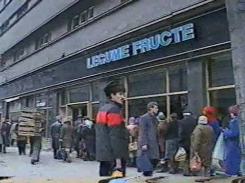

< < < Back
Can The Ways Of Eastern European Men Inspire Us To Revitalize Western Masculinity? – Return Of Kings
I am a 28-year old male living in Eastern Europe in the Moldova province of Romania. I wrote this article because I have noticed that during this masculinity crisis of the West, many Western males tend to perceive the Eastern European male model as a source of inspiration for revitalizing their lost sense of masculinity.
This is because, to some extent, Eastern Europe and Slavic states still cling to conventional gender models more strongly, and their societies encourage a more raw approach to masculinity, alongside a more traditional view on femininity also.
To begin, I would like to offer my own characterization of Eastern European and Slavic manhood. To an extent, the men of Eastern Europe might be called barbaric, backwards, and uncivilized at worst, and cold and unemotional at best. But Eastern European men, despite their low level of sophistication, do provide an example of an environment that fosters hardy, reliable men.
If we are to take the best traits in them, I suppose that these are courage (they are not easily frightened and do not lose their nerve), respect towards women who deserve it, an inclination towards cultivating physical endurance and strength (many people still perform manual labor here), and a strong attachment to their barbaric, warrior ways.
The sense of tribalism
By tribalism, I mean a mindset focused on making a living in a small society, namely a village, or, depending on the case, a neighborhood, block, street and so on. In broad lines, the tribal mindset prevents people from looking at the big picture, turning instead to satisfying the needs of the village or neighborhood and establishing a reputation there.
This is one of the reasons why there are violent urban (and especially rural) areas throughout Eastern Europe, where you might get your ass kicked just for wandering there, because the local macho men deem fit to thrash outsiders just to make sure they maintain their alpha position in the “tribe”:
On the positive side, though, the sense of tribalism fosters the desire to impress and help the extended family, or in some cases, the neighbors in the area one lives in. In the 90s, the sense of tribalism was rampant: even in the university neighbourhoods of my country, college students used to brawl in gangs for the sole reason to prove their toughness – fighting for the sake of fighting, not about territory, gang turfs or whatever.
Why is this so-called tribalism good for fostering strong male values? Because it cultivates a sense of loyalty towards your peers, it makes you streetwise, and often hones your fighting skills, which are all factors that prevent guys from becoming pussies.
Why is tribalism bad? Because it hinders progress in society, by clinging to archaic values and mindsets (some sort of medieval barbarism), instead of embracing more enlightened views towards the improvement of society as a whole.
The religious component

Despite his legendary cruelty, Vlad Tepes is considered by Romanians to be a hero and protector of Christendom. This is a scene from a Romanian historical movie about him, ‘Vlad Tepes’ (1979).
Most Eastern European countries, such as Romania, Russia, Bulgaria, Moldova, or Ukraine, are members of the Eastern Orthodox Church, which, as you probably know, is pretty backwards and likes to cling to its archaic past as much as possible.
What does the Orthodox Church have to do with the male mindset? To answer this, I need to recount just how religion fits into the psyche of the people of Eastern Europe. First of all, allegiance to the church strongly resembles the medieval allegiance to the local warlord, boyar, or voivod. In Eastern Europe, people are quite ignorant of dogma, but still hold the church in high esteem and are ready to defend their Orthodox identity, often by adopting strong homophobic views and a staunch reluctance to adopt Western elements.
Religion encourages an “us-versus-them” mindset, as many people in these parts are ignorant and see the West and its influences as attacks to their national and ethnic identity, aimed at destroying Orthodoxy and establishing some sort of immoral gay tyranny.
In brief, religion fosters a type the archaic medieval mindset of allegiance to the leader and provides a strong hierarchical framework. Because men have the instinct to form hierarchies (being primates after all), religion in Eastern Europe does foster among its members a sense of belonging to a large pack, with its principles being backed up by the irrational fear of embracing Western ideals.
The political environment, both old and new

Grocery store queue from the early 90s. Poverty was rampant and even your basic needs were a luxury back then.
The perceived brutality of Eastern European peoples is perhaps best explained by their long-lasting history of abuse and violence at the hand of their rulers. Throughout history, most rulers, voivods, kings, czars, and whatever rulers might have been in charge sought to drain the most out of the common folk, with wars, genocide and rebellions being always around the corner.
The most recent large-scale violent event in Romania was the 1989 revolution, when the army was running tanks into protesters, and gunned them down from building tops, everything culminating with the execution of Ceausescu, the Romanian dictator, in an act of brutality that ended a 45-year reign of terror, poverty and corruption.
After the fall of communism, things were only apparently better, as massive job loss, poverty and corruption ran rampant. Violence was more frequent than ever, as the sudden change from Ceausescu’s Orwellian society towards a new, freer one triggered enormous confusion and chaos in the minds of the people.
Hardship breeds toughness and this is why it is rather difficult to frighten Eastern Europeans, but it is also difficult to make them revolt against unfairness and ill-treatment. It might be justly stated that most Eastern Europeans are pessimistic and weary, and refrain from smiling in public. However, they do this because they often expect hardship, due to this lack of trust towards leaders.
Comparison to the west
What conclusion can be drawn from this analysis? To answer this question, I would like to describe the recent changes in the males of my country. At 28 years old, I was a witness to the metamorphosis of the Romanian male population. I grew up in the poverty of the ‘90s, where people were tough, uncivilized, and violence was pretty frequent, but during the 2000s things began to change, as the economy grew and we became a part of the European Union.
At that moment the more important shifts occurred in the population of my country. More specifically, as living conditions improved, a surge of wussy, low-testosterone males became prevalent in many urban centers, and I suspect that better living conditions and the Internet have played the main role in this.
Thus emerged the new urban male, effeminate, confused about women, often turning into either some sort of mangina, or some deplorable creep. From what I read, the downfall of men in Western countries took place over several decades, but in my country, this downfall was sudden and confusing.
Concluding remarks
Without a harsh environment, and I mean genuinely harsh, it’s unsurprising that today’s male has become feeble. However, I do not wish such a situation on any country—I’ve lived through it and know how it is like. The key to the question is that every man ought to, every now and then, do something that really forces his limits.
Do whatever, cycling, martial arts, weightlifting, but add a touch of creativity to the mix: for instance, spend two days alone in the woods without a phone, working out. Attend a martial arts school that focuses on insane workouts, even for beginners.
Don’t get involved in tiresome office jobs that involve paperwork. Try living for a couple of days on the streets, eating from dumpsters, or trying to cultivate your food in the countryside. In other words, find your inner barbarian, and try to keep him as an advisor at all times.
Therefore, with regards to the question in the title of this article, I suppose the answer is “Yes,” but only to a certain extent. What many Eastern European men fail to comprehend is that Western values do not mean a total rejection of their beliefs. What many Western men have been led to believe is that being nice, sensitive, and polite is the key to a successful life.
Both are wrong, and both can learn from each other. I hope this article serves well as an item of cultural contact between these two worlds, and helps spread different ideas that would help them improve their views on society and on themselves.
Read More: Eastern Teaching Methods Are Superior To Western


{kind=link}